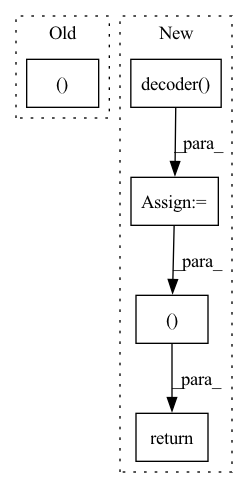

Pattern ID :30296

Before Change
return torch.sigmoid(self.fc4(h3))
def forward(self, x):
mu, logvar = self.encode(x.view(-1, 784))
z = self.reparameterize(mu, logvar)
return self.decode(z), mu, logvar
After Change
z = self.reparameterize(mu, logvar)
else:
z = mu
output = self.output(self.decoder(z))
return output, mu, logvar
In pattern: SUPERPATTERN
Frequency: 3
Non-data size: 5
Instances
Fragment ID: 89748376
Project Name: deeperlearner/pytorch-template
Commit Name: 576d9f329d45ddf4af2b320655eb909c48d5cb34
Time: 2020-11-24
Author: b04202035@g.ntu.edu.tw
File Name: model/VAE.py
M Class Name: VAE
N Class Name: VAE
M Method Name: forward(2)
N Method Name: forward(2)
M Parent Class: nn.Module
N Parent Class: nn.Module
M File Name: model/VAE.py
N File Name: model/VAE.py
M Start Line: 30
M End Line: 32
N Start Line: 52
N End Line: 60
'>
Before Change
encoded_texts=encoded_texts,
device=device)
return before_outs, after_outs, duration_predictions, pitch_predictions, energy_predictions
@torch.inference_mode()
def forward(self,
text,
After Change
duration_z = self.duration_vae(cond=encoded_texts.transpose(1, 2),
infer=True)
pitch_predictions = self.pitch_vae.decoder(pitch_z,
nonpadding=None,
cond=encoded_texts.transpose(1, 2).detach(),
utt_emb=utterance_embedding).transpose(1, 2)
energy_predictions = self.energy_vae.decoder(energy_z,
nonpadding=None,
cond=encoded_texts.transpose(1, 2).detach(),
utt_emb=utterance_embedding).transpose(1, 2)
predicted_durations = self.duration_vae.decoder(duration_z,
nonpadding=None,
cond=encoded_texts.transpose(1, 2).detach(),
utt_emb=utterance_embedding).squeeze(1)
if gold_durations is not None:
predicted_durations = gold_durations
else:
predicted_durations = make_estimated_durations_usable_for_inference(predicted_durations)
if gold_pitch is not None:
pitch_predictions = gold_pitch
if gold_energy is not None:
energy_predictions = gold_energy
for phoneme_index, phoneme_vector in enumerate(text_tensors.squeeze(0)):
if phoneme_vector[get_feature_to_index_lookup()["voiced"]] == 0:
// this means the phoneme is unvoiced
pitch_predictions[0][phoneme_index] = 0.0
if phoneme_vector[get_feature_to_index_lookup()["silence"]] == 1 and pause_duration_scaling_factor != 1.0:
predicted_durations[0][phoneme_index] = torch.round(
predicted_durations[0][phoneme_index].float() * pause_duration_scaling_factor)
pitch_predictions = _scale_variance(pitch_predictions, pitch_variance_scale)
energy_predictions = _scale_variance(energy_predictions, energy_variance_scale)
embedded_pitch_curve = self.pitch_embed(pitch_predictions.transpose(1, 2)).transpose(1, 2)
embedded_energy_curve = self.energy_embed(energy_predictions.transpose(1, 2)).transpose(1, 2)
encoded_texts = encoded_texts + embedded_energy_curve + embedded_pitch_curve
encoded_texts = self.length_regulator(encoded_texts, predicted_durations,
duration_scaling_factor) // (B, Lmax, adim)
predicted_spectrogram_before_postnet = self.decoder(encoded_texts, nonpadding=None,
utt_emb=utterance_embedding).transpose(1, 2)
predicted_spectrogram_before_postnet = self.out_proj(predicted_spectrogram_before_postnet).transpose(1, 2)
// forward flow post-net
predicted_spectrogram_after_postnet = self.run_post_glow(tgt_mels=None,
infer=True,
mel_out=predicted_spectrogram_before_postnet,
encoded_texts=encoded_texts,
tgt_nonpadding=None)
return predicted_spectrogram_before_postnet, predicted_spectrogram_after_postnet, predicted_durations, pitch_predictions, energy_predictions
@torch.inference_mode()
def forward(self,
text,
'>
Fragment ID: 89748371
Project Name: digitalphonetics/ims-toucan
Commit Name: b94d11dc36ef0e5795446826678e202ad390f50b
Time: 2023-01-10
Author: lux.florian@gmail.com
File Name: InferenceInterfaces/InferenceArchitectures/InferencePortaSpeech.py
M Class Name: PortaSpeech
N Class Name: PortaSpeech
M Method Name: _forward(13)
N Method Name: _forward(13)
M Parent Class: torch.nn.Module
N Parent Class: torch.nn.Module
M File Name: InferenceInterfaces/InferenceArchitectures/InferencePortaSpeech.py
N File Name: InferenceInterfaces/InferenceArchitectures/InferencePortaSpeech.py
M Start Line: 185
M End Line: 231
N Start Line: 228
N End Line: 283
'>
Before Change
// x: [B, C_in_out, T]
// nonpadding: [B, 1, T]
// cond: [B, C_g, T]
zs, _ = self.decoder(x=encoded_texts.transpose(1, 2), nonpadding=text_lens, cond=utterance_embedding, infer=False, noise_scale=1.0) // (B, Lmax, adim)
before_outs = self.feat_out(zs).view(zs.size(0), -1, self.odim) // (B, Lmax, odim)
// postnet -> (B, Lmax//r * r, odim)
After Change
if not use_posterior:
z = torch.randn_like(z)
before_outs = self.decoder.decoder(z, nonpadding=speech_lens, cond=encoded_texts).transpose(1, 2)
// forward flow post-net
if run_glow:
after_outs = before_outs + self.post_flow(before_outs.transpose(1, 2)).transpose(1, 2) // postnet -> (B, Lmax, odim)
else:
after_outs = before_outs
if not is_inference:
return before_outs, after_outs, predicted_durations, pitch_predictions, energy_predictions, kl_loss
else:
return before_outs, after_outs, predicted_durations, pitch_predictions, energy_predictions
def inference(self,
'>
Fragment ID: 89748374
Project Name: digitalphonetics/ims-toucan
Commit Name: 1f6ef3294b6593510f03bf07885afb4754888c42
Time: 2022-11-29
Author: florian.lux@ims.uni-stuttgart.de
File Name: TrainingInterfaces/Text_to_Spectrogram/PortaSpeech/PortaSpeech.py
M Class Name: PortaSpeech
N Class Name: PortaSpeech
M Method Name: _forward(14)
N Method Name: _forward(12)
M Parent Class: torch.nn.Module,ABC
N Parent Class: torch.nn.Module,ABC
M File Name: TrainingInterfaces/Text_to_Spectrogram/PortaSpeech/PortaSpeech.py
N File Name: TrainingInterfaces/Text_to_Spectrogram/PortaSpeech/PortaSpeech.py
M Start Line: 303
M End Line: 309
N Start Line: 258
N End Line: 330